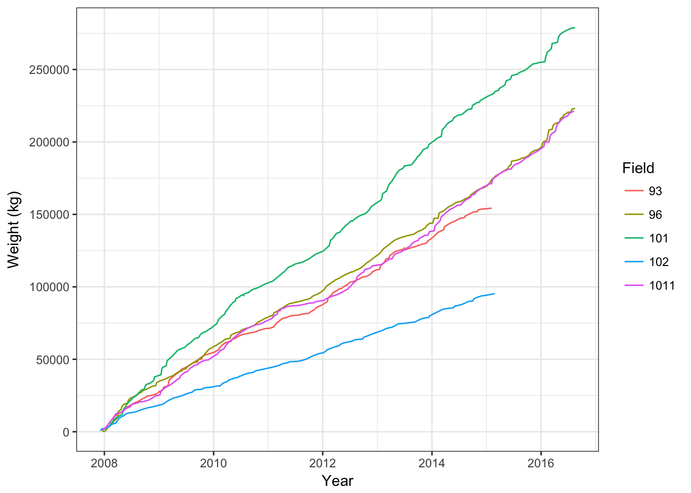
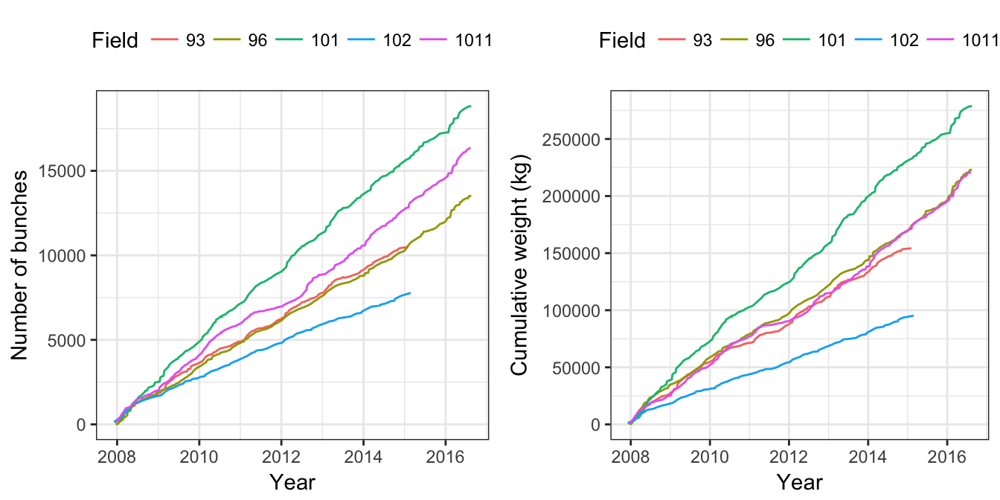
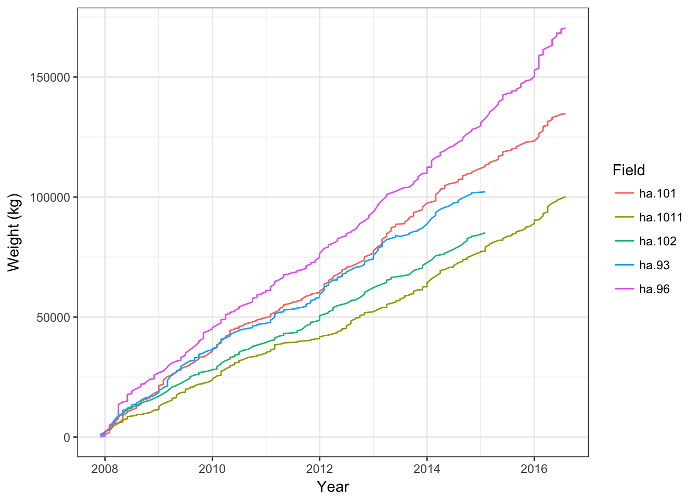
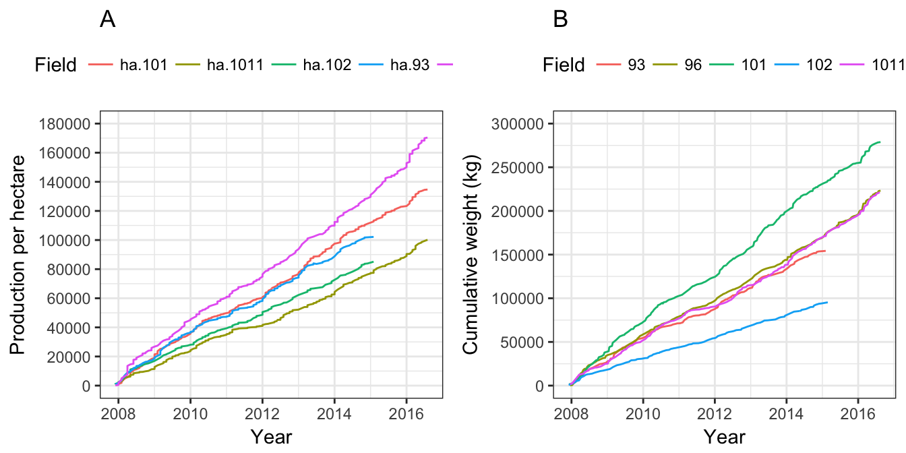

Chapter 3 Bananas

On my farm we have a total of 40 hectares of land. Of this 18 hectares is natural forest with 16 hectares of sugar cane and 6 hectares of bananas. Bananas grow throughout the year and from sucker to fruit is approximately 18 months. Under field management practices we are able to maintain three stages of banana trees on each spot thereby decreasing the time to fruit to six month intervals. It is recommended that every 10 years the field is to be replanted to maximize production however, these banana fields have not been replanted recently and it is our intention to investigate what this may mean for the production.
3.1 Loading the data
I transcribe my raw data into Microsoft Excel from the books. For me this is the easiest way to meticulously enter data and when the data sets are not to large finding errors can be done by changing the sort and filter functions within MS Excel. Once I am ready to import data into RStudio the file is saved as a .csv file using the MS Excel drop down option in the save menu. Data are easiest to work with when it is in long format, i.e.. each row represents a single observation. This is not crucial because it can be transformed using R.
# Load the relevant packages for loading and manipulaiton
library(tidyverse)
# Read in the data using `readr` from the `tidyverse` package
production <- read_csv("data/Banana Production.csv")
# A quick look to make sure the data looks like we expect
head(production)## # A tibble: 6 x 4
## Date Field Bunches weight
## <chr> <int> <int> <int>
## 1 12/3/07 102 162 990
## 2 12/10/07 101 134 1800
## 3 12/18/07 93 115 1494
## 4 12/18/07 96 12 198
## 5 12/18/07 1011 145 1620
## 6 12/18/07 102 37 288Once the data are loaded and looks like the right stuff I get on to making sure my columns are set as either date, factor, or number. There are multiple ways to do this but I like to use lubridate (Grolemund, Spinu, and Wickham 2016) when working with dates and the Tidyverse group namely dplyr (Wickham et al. 2017) for creating factors.
3.1.1 Setting date
# Load lubridate to play with the data values
library(lubridate)
# Making the date coloumn actual date values
production$Date <- as.Date(production$Date, "%m/%d/%y")
# I might want to have the month and year as unique values so I have created floor dates for each
# Add month and year columns
production$month <- floor_date(production$Date, "month")
production$year <- floor_date(production$Date, "year")3.2 Investigating by bunch
It is sometimes useful to use a standard dat or data to assign to the data you wish to work with.
# Open the dat data frame from the environment panel
dat <- production %>%
mutate(Field = as.factor(Field))3.2.1 Bunches per month
If we were to try and plot the data for number of bunches harvested per month we can start to see that there is some kind of cyclic trend (Figure 3.1). On the plot I added a smooth (a model) in blue but there seems to be a problem with what it is doing. To have a look at what this problem might be I will inspect the data frame and trouble shoot
names(dat)## [1] "Date" "Field" "Bunches" "weight" "month" "year"ggplot(data = dat, aes(x = month, y = Bunches)) +
geom_bar(stat = "identity") +
geom_smooth(method = "loess", span = 0.2) +
scale_x_date(date_breaks = "3 month", date_labels = "%b %y") +
theme(axis.text.x = element_text(angle=90, vjust = 0.5)) +
labs(y = "Banana bunches", x = "Time")Figure 3.1: Bar graph showing the number of banana bunches harvested per month.
3.2.1.1 Problematic smooth
# The str function allows you to see both the variable type and the values.
str(dat)## Classes 'tbl_df', 'tbl' and 'data.frame': 836 obs. of 6 variables:
## $ Date : Date, format: "2007-12-03" "2007-12-10" ...
## $ Field : Factor w/ 5 levels "93","96","101",..: 4 3 1 2 5 4 1 2 5 3 ...
## $ Bunches: int 162 134 115 12 145 37 95 13 96 71 ...
## $ weight : int 990 1800 1494 198 1620 288 882 378 1008 558 ...
## $ month : Date, format: "2007-12-01" "2007-12-01" ...
## $ year : Date, format: "2007-01-01" "2007-01-01" ...After looking at both the str and the data frame the problem is that Bunches are not being summed by month. This is an easy fix.
If we want to create a summary data set to only include the sum total of banana bunches per month we can simply use dplyr and the pipe function. This creates a sum total for bunches.month-1 and the blue line now fits the plot more appropriately (Figure 3.2)
names(dat)## [1] "Date" "Field" "Bunches" "weight" "month" "year"# Using dply to group the data by month and year, create a new column for the sum of bunches picked per month, then ungroup
dat.sum_m <-
dat %>%
group_by(month, year) %>%
summarise(bunches.m = sum(Bunches)) %>%
ungroup()# Plotting the data
ggplot(data = dat.sum_m, aes(x = month, y = bunches.m)) +
geom_bar(stat = "identity") +
geom_smooth(method = "loess", span = 0.2) +
scale_x_date(date_breaks = "3 month", date_labels = "%b %y") +
theme(axis.text.x = element_text(angle=90, vjust = 0.5)) +
labs(y = "Banana bunches", x = "Time")Figure 3.2: Bar graph showing the sum of banana bunches harvested per month with a smooth fitted in blue.
From the trend observed in Figure 3.2 it seems apparent that there may be differences in the monthly output which we could look at.
# I am going to modify an existing dataframe so I will assign it to 'a' as to not back track
a <- dat.sum_m
# The month and year are going to be pulled out of the date and given their own coloumn
a$y<-year(a$year)
a$m<-month(a$month)
# If I want to use the month as anything other than a date I should tell R it is a factor
a1 <-
a %>%
mutate(m = as.factor(m))Now that the data are ready to be looked at as bunches per month a simple box plot can tell a quick visual story
# a quick boxplot for the bunches harvested per month
ggplot(data = a1, aes(x = m, y = bunches.m)) +
geom_boxplot() +
geom_jitter() +
labs(y = "Banana bunches", x = "Month")Figure 3.3: Boxplot showing the total banana bunches harvested per month.
3.2.2 Statistics
Are the number of bunches harvest per month statistically different?
To answer this we will run a quick one-way ANOVA
library(broom)
aov <- aov(bunches.m ~ m, data = a1)
# The tidyed
tidy(aov)## term df sumsq meansq statistic p.value
## 1 m 11 3159730 287248.20 8.132671 8.659346e-10
## 2 Residuals 93 3284786 35320.28 NA NAtidy(TukeyHSD(aov))## term comparison estimate conf.low conf.high adj.p.value
## 1 m 2-1 125.222222 -171.81647 422.260918 9.579975e-01
## 2 m 3-1 220.000000 -77.03870 517.038696 3.634513e-01
## 3 m 4-1 12.888889 -284.14981 309.927585 1.000000e+00
## 4 m 5-1 -7.444444 -304.48314 289.594252 1.000000e+00
## 5 m 6-1 -166.555556 -463.59425 130.483141 7.682453e-01
## 6 m 7-1 -322.444444 -619.48314 -25.405748 2.153135e-02
## 7 m 8-1 -271.333333 -568.37203 25.705363 1.075045e-01
## 8 m 9-1 -244.152778 -550.33326 62.027702 2.560930e-01
## 9 m 10-1 -112.527778 -418.70826 193.652702 9.848828e-01
## 10 m 11-1 -162.777778 -468.95826 143.402702 8.231617e-01
## 11 m 12-1 -348.000000 -645.03870 -50.961304 8.554275e-03
## 12 m 3-2 94.777778 -202.26092 391.816474 9.952604e-01
## 13 m 4-2 -112.333333 -409.37203 184.705363 9.811249e-01
## 14 m 5-2 -132.666667 -429.70536 164.372029 9.376806e-01
## 15 m 6-2 -291.777778 -588.81647 5.260918 5.892033e-02
## 16 m 7-2 -447.666667 -744.70536 -150.627971 1.325711e-04
## 17 m 8-2 -396.555556 -693.59425 -99.516859 1.240745e-03
## 18 m 9-2 -369.375000 -675.55548 -63.194520 5.773603e-03
## 19 m 10-2 -237.750000 -543.93048 68.430480 2.931045e-01
## 20 m 11-2 -288.000000 -594.18048 18.180480 8.540437e-02
## 21 m 12-2 -473.222222 -770.26092 -176.183526 4.065441e-05
## 22 m 4-3 -207.111111 -504.14981 89.927585 4.582263e-01
## 23 m 5-3 -227.444444 -524.48314 69.594252 3.134050e-01
## 24 m 6-3 -386.555556 -683.59425 -89.516859 1.878265e-03
## 25 m 7-3 -542.444444 -839.48314 -245.405748 1.398298e-06
## 26 m 8-3 -491.333333 -788.37203 -194.294637 1.720851e-05
## 27 m 9-3 -464.152778 -770.33326 -157.972298 1.176102e-04
## 28 m 10-3 -332.527778 -638.70826 -26.347298 2.141590e-02
## 29 m 11-3 -382.777778 -688.95826 -76.597298 3.471610e-03
## 30 m 12-3 -568.000000 -865.03870 -270.961304 3.833872e-07
## 31 m 5-4 -20.333333 -317.37203 276.705363 1.000000e+00
## 32 m 6-4 -179.444444 -476.48314 117.594252 6.751512e-01
## 33 m 7-4 -335.333333 -632.37203 -38.294637 1.363754e-02
## 34 m 8-4 -284.222222 -581.26092 12.816474 7.409549e-02
## 35 m 9-4 -257.041667 -563.22215 49.138813 1.911989e-01
## 36 m 10-4 -125.416667 -431.59715 180.763813 9.657731e-01
## 37 m 11-4 -175.666667 -481.84715 130.513813 7.415294e-01
## 38 m 12-4 -360.888889 -657.92759 -63.850193 5.233516e-03
## 39 m 6-5 -159.111111 -456.14981 137.927585 8.160043e-01
## 40 m 7-5 -315.000000 -612.03870 -17.961304 2.778753e-02
## 41 m 8-5 -263.888889 -560.92759 33.149807 1.317895e-01
## 42 m 9-5 -236.708333 -542.88881 69.472146 2.994160e-01
## 43 m 10-5 -105.083333 -411.26381 201.097146 9.912727e-01
## 44 m 11-5 -155.333333 -461.51381 150.847146 8.632505e-01
## 45 m 12-5 -340.555556 -637.59425 -43.516859 1.127501e-02
## 46 m 7-6 -155.888889 -452.92759 141.149807 8.349898e-01
## 47 m 8-6 -104.777778 -401.81647 192.260918 9.890943e-01
## 48 m 9-6 -77.597222 -383.77770 228.583258 9.994023e-01
## 49 m 10-6 54.027778 -252.15270 360.208258 9.999830e-01
## 50 m 11-6 3.777778 -302.40270 309.958258 1.000000e+00
## 51 m 12-6 -181.444444 -478.48314 115.594252 6.598402e-01
## 52 m 8-7 51.111111 -245.92759 348.149807 9.999868e-01
## 53 m 9-7 78.291667 -227.88881 384.472146 9.993502e-01
## 54 m 10-7 209.916667 -96.26381 516.097146 4.849922e-01
## 55 m 11-7 159.666667 -146.51381 465.847146 8.406007e-01
## 56 m 12-7 -25.555556 -322.59425 271.483141 1.000000e+00
## 57 m 9-8 27.180556 -278.99992 333.361035 1.000000e+00
## 58 m 10-8 158.805556 -147.37492 464.986035 8.452559e-01
## 59 m 11-8 108.555556 -197.62492 414.736035 9.886365e-01
## 60 m 12-8 -76.666667 -373.70536 220.372029 9.992910e-01
## 61 m 10-9 131.625000 -183.43211 446.682115 9.605881e-01
## 62 m 11-9 81.375000 -233.68211 396.432115 9.992863e-01
## 63 m 12-9 -103.847222 -410.02770 202.333258 9.920825e-01
## 64 m 11-10 -50.250000 -365.30711 264.807115 9.999940e-01
## 65 m 12-10 -235.472222 -541.65270 70.708258 3.070082e-01
## 66 m 12-11 -185.222222 -491.40270 120.958258 6.732661e-013.3 Investigating by field
Across the farm there are three ‘fields’ based on their location. When the bunches are harvested the data for field of origin is also captured. It is interesting to know how each field is performing.
# Creating a cum for each month grouped by field
names(dat)## [1] "Date" "Field" "Bunches" "weight" "month" "year"dat.sum_m.f <-
dat %>%
group_by(month, year, Field) %>%
summarise(bunches.m.f = sum(Bunches))As described earlier there are different fields which are picked from. A look at the production of bunches by field in Figure 3.4 highlights the fact the two fields (f102 and f93) were taken out of production.
ggplot(data = dat.sum_m.f, aes(x = month, y = bunches.m.f)) +
geom_bar(stat = "identity") +
geom_smooth(method = "loess", span = 0.2) +
scale_x_date(date_breaks = "12 month", date_labels = "%y") +
theme(axis.text.x = element_text(angle=90, vjust = 0.5)) +
labs(y = "Banana bunches", x = "Year") +
facet_wrap(~Field, ncol = 2)Figure 3.4: Bar graph showing the sum of banana bunches harvested per month per field with a smooth fitted in blue.
3.3.1 Cumulative bunches per field
It seems interesting to look at a field as a continuous unit and measure the cumulative harvest over time.
# Creating a cumulative bunches harvest for each field
names(dat)## [1] "Date" "Field" "Bunches" "weight" "month" "year"dat.sum_f <-
dat %>%
group_by(Field) %>%
mutate(cumsum = cumsum(Bunches)) %>%
ungroup()
str(dat.sum_f)## Classes 'tbl_df', 'tbl' and 'data.frame': 836 obs. of 7 variables:
## $ Date : Date, format: "2007-12-03" "2007-12-10" ...
## $ Field : Factor w/ 5 levels "93","96","101",..: 4 3 1 2 5 4 1 2 5 3 ...
## $ Bunches: int 162 134 115 12 145 37 95 13 96 71 ...
## $ weight : int 990 1800 1494 198 1620 288 882 378 1008 558 ...
## $ month : Date, format: "2007-12-01" "2007-12-01" ...
## $ year : Date, format: "2007-01-01" "2007-01-01" ...
## $ cumsum : int 162 134 115 12 145 199 210 25 241 205 ...In Figure 3.5 the cumulative number of bunches harvested for each field highlights that they are not all performing the same. We could quickly add a linear model to this to further visualize the trend.
ggplot(data = dat.sum_f, aes(x = Date, y = cumsum, colour = Field)) +
geom_line() +
#geom_bar(stat = "identity") +
#geom_smooth(method = "lm") +
#scale_x_date(date_breaks = "12 month", date_labels = "%y") +
#theme(axis.text.x = element_text(angle=90, vjust = 0.5)) +
labs(y = "Banana bunches", x = "Year") Figure 3.5: Line graph showing the cumulative harvest for banana bunches per field.
#facet_wrap(~Field, ncol = 2)3.3.2 Cumulative weight per field
It seems interesting to look at a field as a continuous unit and measure the cumulative harvest over time.
# Creating a cumulative bunches harvest for each field
names(dat)## [1] "Date" "Field" "Bunches" "weight" "month" "year"dat.sum_f.w <-
dat %>%
group_by(Field) %>%
mutate(cumsum = cumsum(weight))names(dat.sum_f.w)## [1] "Date" "Field" "Bunches" "weight" "month" "year" "cumsum"ggplot(data = dat.sum_f.w, aes(x = Date, y = cumsum, colour = Field)) +
geom_line() +
#geom_bar(stat = "identity") +
#geom_smooth(method = "lm") +
#scale_x_date(date_breaks = "12 month", date_labels = "%y") +
#theme(axis.text.x = element_text(angle=90, vjust = 0.5)) +
labs(y = "Weight (kg)", x = "Year") +
scale_y_continuous(breaks = seq(0, 400000, 50000)) +
theme_bw()
#facet_wrap(~Field, ncol = 2)The awesome thing about this is that you can very easily turn a plot into something more than just a plot using plotly
#devtools::install_github("ropensci/plotly")
#devtools::install_github("hadley/ggplot2")
library(plotly)
bunch <- ggplot(data = dat.sum_f, aes(x = Date, y = cumsum, colour = Field)) +
geom_line() +
#geom_bar(stat = "identity") +
#geom_smooth(method = "lm") +
scale_y_continuous(breaks = seq(0, 20000, 5000)) +
theme_bw() +
theme(legend.direction = "horizontal",
legend.justification = "center",
legend.position = "top") +
#scale_x_date(date_breaks = "12 month", date_labels = "%y") +
#theme(axis.text.x = element_text(angle=90, vjust = 0.5)) +
labs(y = "Number of bunches",
x = "Year")
#facet_wrap(~Field, ncol = 2)
weight <- ggplot(data = dat.sum_f.w, aes(x = Date, y = cumsum, colour = Field)) +
geom_line() +
#geom_bar(stat = "identity") +
#geom_smooth(method = "lm") +
#geom_smooth(method = "loess", span = 0.1) +
#scale_x_date(date_breaks = "12 month", date_labels = "%y") +
#theme(axis.text.x = element_text(angle=90, vjust = 0.5)) +
labs(y = "Cumulative weight (kg)",
x = "Year") +
scale_y_continuous(breaks = seq(0, 400000, 50000)) +
theme_bw() +
theme(legend.direction = "horizontal",
legend.justification = "center",
legend.position = "top")
#facet_wrap(~field, ncol = 2)
library(gridExtra)
grid.arrange(bunch, weight, nrow = 1)
3.4 Production per hectare
The fields are not all the same size which we can standardise to a
data <-
dat %>%
group_by(Field) %>%
mutate(cumsum = cumsum(weight)) %>%
ungroup() %>%
mutate(Field = stringr::str_replace(Field, "93", "f93"),
Field = stringr::str_replace(Field, "96", "f96"),
Field = stringr::str_replace(Field, "101", "f101"),
Field = stringr::str_replace(Field, "1011", "f1011"),
Field = stringr::str_replace(Field, "102", "f102")) %>%
spread(key = Field, value = cumsum) %>%
group_by(month) %>%
mutate(ha.93 = f93 /1.51,
ha.96 = f96 /1.31,
ha.101 = f101/2.07,
ha.1011 = ff1011/2.21,
ha.102 = f102/1.12)
dat.v2 <-
data %>%
select(month, ha.93, ha.96, ha.101, ha.1011, ha.102) %>%
gather(Field, Weight, 2:6)%>%
drop_na()I want to put the plot for per hectare side by side to the weight per field. I may need to adjust the level of factors.
PROBLEM - I DONT KNOW HOW!!!
names(dat.v2)## [1] "month" "Field" "Weight"ggplot(data = dat.v2, aes(x = month, y = Weight, colour = Field)) +
geom_line() +
#geom_bar(stat = "identity") +
#geom_smooth(method = "lm") +
#scale_x_date(date_breaks = "12 month", date_labels = "%y") +
#theme(axis.text.x = element_text(angle=90, vjust = 0.5)) +
labs(y = "Weight (kg)", x = "Year") +
#scale_y_continuous(breaks = seq(0, 400000, 50000)) +
theme_bw()
#facet_wrap(~Field, ncol = 2)#devtools::install_github("ropensci/plotly")
#devtools::install_github("hadley/ggplot2")
library(plotly)
area <- ggplot(data = dat.v2, aes(x = month, y = Weight, colour = Field)) +
geom_line() +
#geom_bar(stat = "identity") +
#geom_smooth(method = "lm") +
#scale_x_date(date_breaks = "12 month", date_labels = "%y") +
#theme(axis.text.x = element_text(angle=90, vjust = 0.5)) +
labs(y = "Production per hectare", x = "Year") +
scale_y_continuous(limits=c(0,180000),
breaks = seq(0, 180000, 20000)) +
ggtitle("A") +
theme_bw() +
ggtitle("A") +
theme(legend.direction = "horizontal",
legend.justification = "center",
legend.position = "top")
#facet_wrap(~Field, ncol = 2)
weight <- ggplot(data = dat.sum_f.w, aes(x = Date, y = cumsum, colour = Field)) +
geom_line() +
#geom_bar(stat = "identity") +
#geom_smooth(method = "lm") +
#geom_smooth(method = "loess", span = 0.1) +
#scale_x_date(date_breaks = "12 month", date_labels = "%y") +
#theme(axis.text.x = element_text(angle=90, vjust = 0.5)) +
labs(y = "Cumulative weight (kg)",
x = "Year") +
scale_y_continuous(limits=c(0,300000),
breaks = seq(0, 300000, 50000)) +
theme_bw() +
ggtitle("B") +
theme(legend.direction = "horizontal",
legend.justification = "center",
legend.position = "top")
#facet_wrap(~field, ncol = 2)
library(gridExtra)
grid.arrange(area, weight, nrow = 1)
References
Grolemund, Garrett, Vitalie Spinu, and Hadley Wickham. 2016. Lubridate: Make Dealing with Dates a Little Easier. https://CRAN.R-project.org/package=lubridate.
Wickham, Hadley, Romain Francois, Lionel Henry, and Kirill Müller. 2017. Dplyr: A Grammar of Data Manipulation. https://CRAN.R-project.org/package=dplyr.